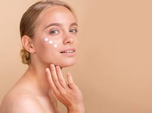

Kremy nawilżające
Krem nawilżający to jeden z absolutnie podstawowych kosmetyków, który powinien być stosowany przez każdą osobę, niezależnie od płci. Nasza twarz i ciało każdego dnia jest bowiem narażona na czynniki zewnętrzne. Wpływ ma na nią stan powietrza, słońce, mróz czy też wiatr. Dlatego należy odpowiednio ją chronić, wykorzystując w tym celu dostępne na rynku kosmetyki.
Dlaczego warto wybrać krem nawilżający?
Każda cera ma oczywiście zupełnie inne potrzeby. W niektórych przypadkach najbardziej skuteczne są kremy do walki z niedoskonałościami, w innych na przykład te z kolagenem. Jednak kremy nawilżające, są bez wątpienia podstawą. Dlaczego? Przede wszystkim dlatego, że warunki atmosferyczne mają wpływ na przesuszenie cery. Bez względu na to czy oddziałuje na nią słońce czy też mróz efekt jest ten sam - nadmierne przesuszenie. Jeśli oczekujemy, iż nasza skóra będzie miękka, gładka i przyjemna w dotyku, musimy zapewnić jej odpowiednią dawkę nawilżenia.